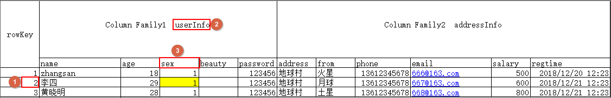

大数据开发之HBase
1. HBase是什么
1.1 HBase的概念
- HBase基于Google的BigTable论文，是建立的==HDFS==之上，提供高可靠性、高性能、列存储、可伸缩、实时读写的分布式数据库系统。
- 在需要==实时读写随机访问==超大规模数据集时，可以使用HBase。
1.2 HBase的特点
···
2. HBase集群安装部署
点击跳转
3. HBase表的数据模型

3.1 rowkey行键
- table的主键，table中的记录按照rowkey 的字典序进行排序
- Row key行键可以是任意字符串(最大长度是 64KB，实际应用中长度一般为 10-100bytes)
3.2 Column Family列族
- 列族或列簇
- HBase表中的每个列，都归属与某个列族
- 列族是表的schema的一部分(而列不是)，即建表时至少指定一个列族
- 比如创建一张表，名为
user，有两个列族，分别是info和data，建表语句create 'user', 'info', 'data'
3.3 Column列
- 列肯定是表的某一列族下的一个列，用
列族名:列名表示，如info列族下的name列，表示为info:name - 属于某一个ColumnFamily,类似于我们mysql当中创建的具体的列
3.4 cell单元格
指定row key行键、列族、列，可以确定的一个cell单元格
cell中的数据是没有类型的，全部是以字节数组进行存储

3.5 Timestamp时间戳
- 可以对表中的Cell多次赋值，每次赋值操作时的时间戳timestamp，可看成Cell值的版本号version number
- 即一个Cell可以有多个版本的值
4. HBase整体架构

4.1 Client客户端
- Client是操作HBase集群的入口
- 对于管理类的操作，如表的增、删、改操纵，Client通过RPC与HMaster通信完成
- 对于表数据的读写操作，Client通过RPC与RegionServer交互，读写数据
- Client类型：
- HBase shell
- Java编程接口
- Thrift、Avro、Rest等等
4.2 ZooKeeper集群
作用
实现了HMaster的高可用，多HMaster间进行主备选举
保存了HBase的元数据信息meta表，提供了HBase表中region的寻址入口的线索数据
对HMaster和HRegionServer实现了监控
4.3 HMaster
- HBase集群也是主从架构，HMaster是主的角色，是老大
- 主要负责Table表和Region的相关管理工作：
- 关于Table
- 管理Client对Table的增删改的操作
- 关于Region
- 在Region分裂后，负责新Region分配到指定的HRegionServer上
- 管理HRegionServer间的负载均衡，迁移region分布
- 当HRegionServer宕机后，负责其上的region的迁移
4.4 HRegionServer
- HBase集群中从的角色，是小弟
- 作用
- 响应客户端的读写数据请求
- 负责管理一系列的Region
- 切分在运行过程中变大的region
4.5 Region
- HBase集群中分布式存储的最小单元
- 一个Region对应一个Table表的部分数据
HBase使用，主要有两种形式：①命令；②Java编程
5. HBase shell 命令基本操作
5.1 进入HBase客户端命令操作界面
- node01执行以下命令，进入HBase的shell客户端
cd /kfly/install/hbase-1.2.0-cdh5.14.2/
bin/HBase shell
5.2 help 帮助命令
HBase(main):001:0> help
5.3 list 查看有哪些表
- 查看当前数据库中有哪些表
HBase(main):002:0> list
5.4 create 创建表
- 创建user表，包含info、data两个列族
- 使用create命令
HBase(main):010:0> create 'user', 'info', 'data'
或者
HBase(main):010:0> create 'user', {NAME => 'info', VERSIONS => '3'}，{NAME => 'data'}
5.5 put 插入数据操作
- 向表中插入数据
- 使用put命令
向user表中插入信息，row key为rk0001，列族info中添加名为name的列，值为zhangsan
HBase(main):011:0> put 'user', 'rk0001', 'info:name', 'zhangsan'
向user表中插入信息，row key为rk0001，列族info中添加名为gender的列，值为female
HBase(main):012:0> put 'user', 'rk0001', 'info:gender', 'female'
向user表中插入信息，row key为rk0001，列族info中添加名为age的列，值为20
HBase(main):013:0> put 'user', 'rk0001', 'info:age', 20
向user表中插入信息，row key为rk0001，列族data中添加名为pic的列，值为picture
HBase(main):014:0> put 'user', 'rk0001', 'data:pic', 'picture'
5.6 查询数据操作
5.6.1 通过rowkey进行查询
- 获取user表中row key为rk0001的所有信息（即所有cell的数据）
- 使用get命令
HBase(main):015:0> get 'user', 'rk0001'
5.6.2 查看rowkey下某个列族的信息
- 获取user表中row key为rk0001，info列族的所有信息
HBase(main):016:0> get 'user', 'rk0001', 'info'
5.6.3 查看rowkey指定列族指定字段的值
- 获取user表中row key为rk0001，info列族的name、age列的信息
HBase(main):017:0> get 'user', 'rk0001', 'info:name', 'info:age'

5.6.4 查看rowkey指定多个列族的信息
- 获取user表中row key为rk0001，info、data列族的信息
HBase(main):018:0> get 'user', 'rk0001', 'info', 'data'
或者你也可以这样写
HBase(main):019:0> get 'user', 'rk0001', {COLUMN => ['info', 'data']}
或者你也可以这样写，也行
HBase(main):020:0> get 'user', 'rk0001', {COLUMN => ['info:name', 'data:pic']}
5.6.5 指定rowkey与列值过滤器查询
- 获取user表中row key为rk0001，cell的值为zhangsan的信息
HBase(main):030:0> get 'user', 'rk0001', {FILTER => "ValueFilter(=, 'binary:zhangsan')"}
5.6.6 指定rowkey与列值模糊查询
- 获取user表中row key为rk0001，列标示符中含有a的信息
HBase(main):031:0> get 'user', 'rk0001', {FILTER => "(QualifierFilter(=,'substring:a'))"}
继续插入一批数据
HBase(main):032:0> put 'user', 'rk0002', 'info:name', 'fanbingbing'
HBase(main):033:0> put 'user', 'rk0002', 'info:gender', 'female'
HBase(main):034:0> put 'user', 'rk0002', 'info:nationality', '中国'
HBase(main):035:0> get 'user', 'rk0002', {FILTER => "ValueFilter(=, 'binary:中国')"}
map端聚合
- 查询user表中的所有信息
- 使用scan命令
HBase(main):032:0> scan 'user'
5.6.8 列族查询
- 查询user表中列族为info的信息
scan 'user', {COLUMNS => 'info'}
scan 'user', {COLUMNS => 'info', RAW => true, VERSIONS => 5}
scan 'user', {COLUMNS => 'info', RAW => true, VERSIONS => 3}
5.6.9 多列族查询
- 查询user表中列族为info和data的信息
scan 'user', {COLUMNS => ['info', 'data']}
5.6.10 指定列族与某个列名查询
- 查询user表中列族为info、列标示符为name的信息
scan 'user', {COLUMNS => 'info:name'}
- 查询info:name列、data:pic列的数据
scan 'user', {COLUMNS => ['info:name', 'data:pic']}
- 查询user表中列族为info、列标示符为name的信息,并且版本最新的5个
scan 'user', {COLUMNS => 'info:name', VERSIONS => 5}
5.6.11 指定多个列族与按照数据值模糊查询
- 查询user表中列族为info和data且列标示符中含有a字符的信息
scan 'user', {COLUMNS => ['info', 'data'], FILTER => "(QualifierFilter(=,'substring:a'))"}
5.6.12 指定rowkey的范围查询
- 查询user表中列族为info，rk范围是[rk0001, rk0003)的数据
scan 'user', {COLUMNS => 'info', STARTROW => 'rk0001', ENDROW => 'rk0003'}
5.6.13 指定rowkey模糊查询
- 查询user表中row key以rk字符开头的数据
scan 'user',{FILTER=>"PrefixFilter('rk')"}
5.6.14 指定数据版本的范围查询
- 查询user表中指定范围的数据（前闭后开）
scan 'user', {TIMERANGE => [1392368783980, 1392380169184]}
5.7 更新数据操作
5.7.1 更新数据值
- 更新操作同插入操作一模一样，只不过有数据就更新，没数据就添加
- 使用put命令
5.7.2 更新版本号
- 将user表的f1列族版本数改为5
HBase(main):050:0> alter 'user', NAME => 'info', VERSIONS => 5
5.8 删除数据以及删除表操作
5.8.1 指定rowkey以及列名进行删除
- 删除user表row key为rk0001，列标示符为info:name的数据
HBase(main):045:0> delete 'user', 'rk0001', 'info:name'
5.8.2 指定rowkey，列名以及版本号进行删除
- 删除user表row key为rk0001，列标示符为info:name，timestamp为1392383705316的数据
delete 'user', 'rk0001', 'info:name', 1392383705316
5.8.3 删除一个列族
- 删除一个列族：
alter 'user', NAME => 'info', METHOD => 'delete'
或 alter 'user', 'delete' => 'info'
5.8.4 清空表数据
HBase(main):017:0> truncate 'user'
5.8.5 删除表
- 首先需要先让该表为disable状态，使用命令：
HBase(main):049:0> disable 'user'
- 然后使用drop命令删除这个表
HBase(main):050:0> drop 'user'
(注意：如果直接drop表，会报错：Drop the named table. Table must first be disabled)
5.9 统计一张表有多少行数据
HBase(main):053:0> count 'user'
6. HBase的高级shell管理命令
6.1 status
- 例如：显示服务器状态
HBase(main):058:0> status 'node01'
6.2 whoami
- 显示HBase当前用户，例如：
HBase> whoami
6.3 list
- 显示当前所有的表
HBase > list
6.4 count
- 统计指定表的记录数，例如：
HBase> count 'user'
6.5 describe
- 展示表结构信息
HBase> describe 'user'
6.6 exists
- 检查表是否存在，适用于表量特别多的情况
HBase> exists 'user'
6.7 is_enabled、is_disabled
- 检查表是否启用或禁用
HBase> is_enabled 'user'
HBase> is_disabled 'user'
6.8 alter
该命令可以改变表和列族的模式，例如：
为当前表增加列族：
HBase> alter 'user', NAME => 'CF2', VERSIONS => 2
- 为当前表删除列族：
HBase(main):002:0> alter 'user', 'delete' => 'CF2'
6.9 disable/enable
- 禁用一张表/启用一张表
HBase> disable 'user'
HBase> enable 'user'
6.10 drop
- 删除一张表，记得在删除表之前必须先禁用
6.11 truncate
- 禁用表-删除表-创建表
7. HBase的JavaAPI操作（重点）
- HBase是一个分布式的NoSql数据库，在实际工作当中，我们一般都可以通过JavaAPI来进行各种数据的操作，包括创建表，以及数据的增删改查等等
7.1 创建maven工程
- 讲如下内容作为maven工程中pom.xml的repositories的内容
- 自动导包（需要从cloudera仓库下载，耗时较长，耐心等待）
<repositories>
<repository>
<id>cloudera</id>
<url>https://repository.cloudera.com/artifactory/cloudera-repos/</url>
</repository>
</repositories>
<dependencies>
<dependency>
<groupId>org.apache.hadoop</groupId>
<artifactId>hadoop-client</artifactId>
<version>2.6.0-mr1-cdh5.14.2</version>
</dependency>
<dependency>
<groupId>org.apache.HBase</groupId>
<artifactId>hbase-client</artifactId>
<version>1.2.0-cdh5.14.2</version>
</dependency>
<dependency>
<groupId>org.apache.HBase</groupId>
<artifactId>hbase-server</artifactId>
<version>1.2.0-cdh5.14.2</version>
</dependency>
<dependency>
<groupId>junit</groupId>
<artifactId>junit</artifactId>
<version>4.12</version>
<scope>test</scope>
</dependency>
<dependency>
<groupId>org.testng</groupId>
<artifactId>testng</artifactId>
<version>6.14.3</version>
<scope>test</scope>
</dependency>
</dependencies>
<build>
<plugins>
<plugin>
<groupId>org.apache.maven.plugins</groupId>
<artifactId>maven-compiler-plugin</artifactId>
<version>3.0</version>
<configuration>
<source>1.8</source>
<target>1.8</target>
<encoding>UTF-8</encoding>
</configuration>
</plugin>
<plugin>
<groupId>org.apache.maven.plugins</groupId>
<artifactId>maven-shade-plugin</artifactId>
<version>2.2</version>
<executions>
<execution>
<phase>package</phase>
<goals>
<goal>shade</goal>
</goals>
<configuration>
<filters>
<filter>
<artifact>*:*</artifact>
<excludes>
<exclude>META-INF/*.SF</exclude>
<exclude>META-INF/*.DSA</exclude>
<exclude>META-INF/*/RSA</exclude>
</excludes>
</filter>
</filters>
</configuration>
</execution>
</executions>
</plugin>
</plugins>
</build>
7.2 创建myuser表
- 创建myuser表，此表有两个列族f1和f2
//操作数据库 第一步：获取连接 第二步：获取客户端对象 第三步：操作数据库 第四步：关闭
/**
* 创建一张表 myuser 两个列族 f1 f2
*/
@Test
public void createTable() throws IOException {
Configuration configuration = HBaseConfiguration.create();
//连接HBase集群不需要指定HBase主节点的ip地址和端口号
configuration.set("HBase.zookeeper.quorum","node01:2181,node02:2181,node03:2181");
//创建连接对象
Connection connection = ConnectionFactory.createConnection(configuration);
//获取连接对象，创建一张表
//获取管理员对象，来对手数据库进行DDL的操作
Admin admin = connection.getAdmin();
//指定我们的表名
TableName myuser = TableName.valueOf("myuser");
HTableDescriptor hTableDescriptor = new HTableDescriptor(myuser);
//指定两个列族
HColumnDescriptor f1 = new HColumnDescriptor("f1");
HColumnDescriptor f2 = new HColumnDescriptor("f2");
hTableDescriptor.addFamily(f1);
hTableDescriptor.addFamily(f2);
admin.createTable(hTableDescriptor);
admin.close();
connection.close();
}
7.3 向表中添加数据
private Connection connection ;
private final String TABLE_NAME = "myuser";
private Table table ;
@BeforeTest
public void initTable () throws IOException {
Configuration configuration = HBaseConfiguration.create();
configuration.set("HBase.zookeeper.quorum","node01:2181,node02:2181");
connection= ConnectionFactory.createConnection(configuration);
table = connection.getTable(TableName.valueOf(TABLE_NAME));
}
@AfterTest
public void close() throws IOException {
table.close();
connection.close();
}
/**
* 向myuser表当中添加数据
*/
@Test
public void addData() throws IOException {
//获取表
Table table = connection.getTable(TableName.valueOf(TABLE_NAME));
Put put = new Put("0001".getBytes());//创建put对象，并指定rowkey值
put.addColumn("f1".getBytes(),"name".getBytes(),"zhangsan".getBytes());
put.addColumn("f1".getBytes(),"age".getBytes(), Bytes.toBytes(18));
put.addColumn("f1".getBytes(),"id".getBytes(), Bytes.toBytes(25));
put.addColumn("f1".getBytes(),"address".getBytes(), Bytes.toBytes("地球人"));
table.put(put);
table.close();
}
7.4 查询数据
- 初始化一批数据到HBase表当中，用于查询
@Test
public void insertBatchData() throws IOException {
//获取连接
Configuration configuration = HBaseConfiguration.create();
configuration.set("HBase.zookeeper.quorum", "node01:2181,node02:2181");
Connection connection = ConnectionFactory.createConnection(configuration);
//获取表
Table myuser = connection.getTable(TableName.valueOf("myuser"));
//创建put对象，并指定rowkey
Put put = new Put("0002".getBytes());
put.addColumn("f1".getBytes(),"id".getBytes(),Bytes.toBytes(1));
put.addColumn("f1".getBytes(),"name".getBytes(),Bytes.toBytes("曹操"));
put.addColumn("f1".getBytes(),"age".getBytes(),Bytes.toBytes(30));
put.addColumn("f2".getBytes(),"sex".getBytes(),Bytes.toBytes("1"));
put.addColumn("f2".getBytes(),"address".getBytes(),Bytes.toBytes("沛国谯县"));
put.addColumn("f2".getBytes(),"phone".getBytes(),Bytes.toBytes("16888888888"));
put.addColumn("f2".getBytes(),"say".getBytes(),Bytes.toBytes("helloworld"));
Put put2 = new Put("0003".getBytes());
put2.addColumn("f1".getBytes(),"id".getBytes(),Bytes.toBytes(2));
put2.addColumn("f1".getBytes(),"name".getBytes(),Bytes.toBytes("刘备"));
put2.addColumn("f1".getBytes(),"age".getBytes(),Bytes.toBytes(32));
put2.addColumn("f2".getBytes(),"sex".getBytes(),Bytes.toBytes("1"));
put2.addColumn("f2".getBytes(),"address".getBytes(),Bytes.toBytes("幽州涿郡涿县"));
put2.addColumn("f2".getBytes(),"phone".getBytes(),Bytes.toBytes("17888888888"));
put2.addColumn("f2".getBytes(),"say".getBytes(),Bytes.toBytes("talk is cheap , show me the code"));
Put put3 = new Put("0004".getBytes());
put3.addColumn("f1".getBytes(),"id".getBytes(),Bytes.toBytes(3));
put3.addColumn("f1".getBytes(),"name".getBytes(),Bytes.toBytes("孙权"));
put3.addColumn("f1".getBytes(),"age".getBytes(),Bytes.toBytes(35));
put3.addColumn("f2".getBytes(),"sex".getBytes(),Bytes.toBytes("1"));
put3.addColumn("f2".getBytes(),"address".getBytes(),Bytes.toBytes("下邳"));
put3.addColumn("f2".getBytes(),"phone".getBytes(),Bytes.toBytes("12888888888"));
put3.addColumn("f2".getBytes(),"say".getBytes(),Bytes.toBytes("what are you 弄啥嘞！"));
Put put4 = new Put("0005".getBytes());
put4.addColumn("f1".getBytes(),"id".getBytes(),Bytes.toBytes(4));
put4.addColumn("f1".getBytes(),"name".getBytes(),Bytes.toBytes("诸葛亮"));
put4.addColumn("f1".getBytes(),"age".getBytes(),Bytes.toBytes(28));
put4.addColumn("f2".getBytes(),"sex".getBytes(),Bytes.toBytes("1"));
put4.addColumn("f2".getBytes(),"address".getBytes(),Bytes.toBytes("四川隆中"));
put4.addColumn("f2".getBytes(),"phone".getBytes(),Bytes.toBytes("14888888888"));
put4.addColumn("f2".getBytes(),"say".getBytes(),Bytes.toBytes("出师表你背了嘛"));
Put put5 = new Put("0006".getBytes());
put5.addColumn("f1".getBytes(),"id".getBytes(),Bytes.toBytes(5));
put5.addColumn("f1".getBytes(),"name".getBytes(),Bytes.toBytes("司马懿"));
put5.addColumn("f1".getBytes(),"age".getBytes(),Bytes.toBytes(27));
put5.addColumn("f2".getBytes(),"sex".getBytes(),Bytes.toBytes("1"));
put5.addColumn("f2".getBytes(),"address".getBytes(),Bytes.toBytes("哪里人有待考究"));
put5.addColumn("f2".getBytes(),"phone".getBytes(),Bytes.toBytes("15888888888"));
put5.addColumn("f2".getBytes(),"say".getBytes(),Bytes.toBytes("跟诸葛亮死掐"));
Put put6 = new Put("0007".getBytes());
put6.addColumn("f1".getBytes(),"id".getBytes(),Bytes.toBytes(5));
put6.addColumn("f1".getBytes(),"name".getBytes(),Bytes.toBytes("xiaobubu—吕布"));
put6.addColumn("f1".getBytes(),"age".getBytes(),Bytes.toBytes(28));
put6.addColumn("f2".getBytes(),"sex".getBytes(),Bytes.toBytes("1"));
put6.addColumn("f2".getBytes(),"address".getBytes(),Bytes.toBytes("内蒙人"));
put6.addColumn("f2".getBytes(),"phone".getBytes(),Bytes.toBytes("15788888888"));
put6.addColumn("f2".getBytes(),"say".getBytes(),Bytes.toBytes("貂蝉去哪了"));
List<Put> listPut = new ArrayList<Put>();
listPut.add(put);
listPut.add(put2);
listPut.add(put3);
listPut.add(put4);
listPut.add(put5);
listPut.add(put6);
myuser.put(listPut);
myuser.close();
connection.close();
}
7.4.1 Get查询
- 按照rowkey进行查询，获取所有列的所有值
- 查询主键rowkey为0003的人
/**
* 查询rowkey为0003的人
*/
@Test
public void getData() throws IOException {
Table table = connection.getTable(TableName.valueOf(TABLE_NAME));
//通过get对象，指定rowkey
Get get = new Get(Bytes.toBytes("0003"));
get.addFamily("f1".getBytes());//限制只查询f1列族下面所有列的值
//查询f2 列族 phone 这个字段
get.addColumn("f2".getBytes(),"phone".getBytes());
//通过get查询，返回一个result对象，所有的字段的数据都是封装在result里面了
Result result = table.get(get);
List<Cell> cells = result.listCells(); //获取一条数据所有的cell，所有数据值都是在cell里面 的
for (Cell cell : cells) {
byte[] family_name = CellUtil.cloneFamily(cell);//获取列族名
byte[] column_name = CellUtil.cloneQualifier(cell);//获取列名
byte[] rowkey = CellUtil.cloneRow(cell);//获取rowkey
byte[] cell_value = CellUtil.cloneValue(cell);//获取cell值
//需要判断字段的数据类型，使用对应的转换的方法，才能够获取到值
if("age".equals(Bytes.toString(column_name)) || "id".equals(Bytes.toString(column_name))){
System.out.println(Bytes.toString(family_name));
System.out.println(Bytes.toString(column_name));
System.out.println(Bytes.toString(rowkey));
System.out.println(Bytes.toInt(cell_value));
}else{
System.out.println(Bytes.toString(family_name));
System.out.println(Bytes.toString(column_name));
System.out.println(Bytes.toString(rowkey));
System.out.println(Bytes.toString(cell_value));
}
}
table.close();
}
7.4.2 Scan查询
/**
* 不知道rowkey的具体值，我想查询rowkey范围值是0003 到0006
* select * from myuser where age > 30 and id < 8 and name like 'zhangsan'
*
*/
@Test
public void scanData() throws IOException {
//获取table
Table table = connection.getTable(TableName.valueOf(TABLE_NAME));
Scan scan = new Scan();//没有指定startRow以及stopRow 全表扫描
//只扫描f1列族
scan.addFamily("f1".getBytes());
//扫描 f2列族 phone 这个字段
scan.addColumn("f2".getBytes(),"phone".getBytes());
scan.setStartRow("0003".getBytes());
scan.setStopRow("0007".getBytes());
//通过getScanner查询获取到了表里面所有的数据，是多条数据
ResultScanner scanner = table.getScanner(scan);
//遍历ResultScanner 得到每一条数据，每一条数据都是封装在result对象里面了
for (Result result : scanner) {
List<Cell> cells = result.listCells();
for (Cell cell : cells) {
byte[] family_name = CellUtil.cloneFamily(cell);
byte[] qualifier_name = CellUtil.cloneQualifier(cell);
byte[] rowkey = CellUtil.cloneRow(cell);
byte[] value = CellUtil.cloneValue(cell);
//判断id和age字段，这两个字段是整形值
if("age".equals(Bytes.toString(qualifier_name)) || "id".equals(Bytes.toString(qualifier_name))){
System.out.println("数据的rowkey为" + Bytes.toString(rowkey) +"======数据的列族为" + Bytes.toString(family_name)+"======数据的列名为" + Bytes.toString(qualifier_name) + "==========数据的值为" +Bytes.toInt(value));
}else{
System.out.println("数据的rowkey为" + Bytes.toString(rowkey) +"======数据的列族为" + Bytes.toString(family_name)+"======数据的列名为" + Bytes.toString(qualifier_name) + "==========数据的值为" +Bytes.toString(value));
}
}
}
table.close();
}
7.5 HBase过滤器查询
7.5.1 过滤器
过滤器的作用是在服务端判断数据是否满足条件，然后只将满足条件的数据返回给客户端
过滤器的类型很多，但是可以分为两大类
- ==比较过滤器==
- ==专用过滤器==
HBase过滤器的比较运算符：
LESS <
LESS_OR_EQUAL <=
EQUAL =
NOT_EQUAL <>
GREATER_OR_EQUAL >=
GREATER >
NO_OP 排除所有
- Hbase过滤器的比较器（指定比较机制）：
BinaryComparator 按字节索引顺序比较指定字节数组，采用Bytes.compareTo(byte[])
BinaryPrefixComparator 跟前面相同，只是比较左端的数据是否相同
NullComparator 判断给定的是否为空
BitComparator 按位比较
RegexStringComparator 提供一个正则的比较器，仅支持 EQUAL 和非EQUAL
SubstringComparator 判断提供的子串是否出现在中。
7.5.2 比较过滤器使用
1、rowKey过滤器RowFilter
- 通过RowFilter过滤比rowKey 0003小的所有值出来
/**
* 查询所有的rowkey比0003小的所有的数据
*/
@Test
public void rowFilter() throws IOException {
Table table = connection.getTable(TableName.valueOf(TABLE_NAME));
Scan scan = new Scan();
//获取我们比较对象
BinaryComparator binaryComparator = new BinaryComparator("0003".getBytes());
/***
* rowFilter需要加上两个参数
* 第一个参数就是我们的比较规则
* 第二个参数就是我们的比较对象
*/
RowFilter rowFilter = new RowFilter(CompareFilter.CompareOp.GREATER, binaryComparator);
//为我们的scan对象设置过滤器
scan.setFilter(rowFilter);
ResultScanner scanner = table.getScanner(scan);
for (Result result : scanner) {
List<Cell> cells = result.listCells();
for (Cell cell : cells) {
byte[] family_name = CellUtil.cloneFamily(cell);
byte[] qualifier_name = CellUtil.cloneQualifier(cell);
byte[] rowkey = CellUtil.cloneRow(cell);
byte[] value = CellUtil.cloneValue(cell);
//判断id和age字段，这两个字段是整形值
if("age".equals(Bytes.toString(qualifier_name)) || "id".equals(Bytes.toString(qualifier_name))){
System.out.println("数据的rowkey为" + Bytes.toString(rowkey) +"======数据的列族为" + Bytes.toString(family_name)+"======数据的列名为" + Bytes.toString(qualifier_name) + "==========数据的值为" +Bytes.toInt(value));
}else{
System.out.println("数据的rowkey为" + Bytes.toString(rowkey) +"======数据的列族为" + Bytes.toString(family_name)+"======数据的列名为" + Bytes.toString(qualifier_name) + "==========数据的值为" +Bytes.toString(value));
}
}
}
}
2、列族过滤器FamilyFilter
- 查询列族名包含f2的所有列族下面的数据
/**
* 通过familyFilter来实现列族的过滤
* 需要过滤，列族名包含f2
* f1 f2 hello world
*/
@Test
public void familyFilter() throws IOException {
Table table = connection.getTable(TableName.valueOf(TABLE_NAME));
Scan scan = new Scan();
SubstringComparator substringComparator = new SubstringComparator("f2");
//通过familyfilter来设置列族的过滤器
FamilyFilter familyFilter = new FamilyFilter(CompareFilter.CompareOp.EQUAL, substringComparator);
scan.setFilter(familyFilter);
ResultScanner scanner = table.getScanner(scan);
for (Result result : scanner) {
List<Cell> cells = result.listCells();
for (Cell cell : cells) {
byte[] family_name = CellUtil.cloneFamily(cell);
byte[] qualifier_name = CellUtil.cloneQualifier(cell);
byte[] rowkey = CellUtil.cloneRow(cell);
byte[] value = CellUtil.cloneValue(cell);
//判断id和age字段，这两个字段是整形值
if("age".equals(Bytes.toString(qualifier_name)) || "id".equals(Bytes.toString(qualifier_name))){
System.out.println("数据的rowkey为" + Bytes.toString(rowkey) +"======数据的列族为" + Bytes.toString(family_name)+"======数据的列名为" + Bytes.toString(qualifier_name) + "==========数据的值为" +Bytes.toInt(value));
}else{
System.out.println("数据的rowkey为" + Bytes.toString(rowkey) +"======数据的列族为" + Bytes.toString(family_name)+"======数据的列名为" + Bytes.toString(qualifier_name) + "==========数据的值为" +Bytes.toString(value));
}
}
}
}
3、列过滤器QualifierFilter
- 只查询name列的值
/**
* 列名过滤器 只查询包含name列的值
*/
@Test
public void qualifierFilter() throws IOException {
Scan scan = new Scan();
SubstringComparator substringComparator = new SubstringComparator("name");
//定义列名过滤器，只查询列名包含name的列
QualifierFilter qualifierFilter = new QualifierFilter(CompareFilter.CompareOp.EQUAL, substringComparator);
scan.setFilter(qualifierFilter);
ResultScanner scanner = table.getScanner(scan);
printlReult(scanner);
}
4、列值过滤器ValueFilter
- 查询所有列当中包含8的数据
/**
* 查询哪些字段值 包含数字8
*/
@Test
public void contains8() throws IOException {
Scan scan = new Scan();
SubstringComparator substringComparator = new SubstringComparator("8");
//列值过滤器，过滤列值当中包含数字8的所有的列
ValueFilter valueFilter = new ValueFilter(CompareFilter.CompareOp.EQUAL, substringComparator);
scan.setFilter(valueFilter);
ResultScanner scanner = table.getScanner(scan);
printlReult(scanner);
}
7.5.3 专用过滤器使用
1、单列值过滤器 SingleColumnValueFilter
SingleColumnValueFilter会返回满足条件的整列值的所有字段
查询名字为刘备的数据
/**
* select * from myuser where name = '刘备'
* 会返回我们符合条件数据的所有的字段
*
* SingleColumnValueExcludeFilter 列值排除过滤器
* select * from myuser where name ！= '刘备'
*/
@Test
public void singleColumnValueFilter() throws IOException {
//查询 f1 列族 name 列 值为刘备的数据
Scan scan = new Scan();
//单列值过滤器，过滤 f1 列族 name 列 值为刘备的数据
SingleColumnValueFilter singleColumnValueFilter = new SingleColumnValueFilter("f1".getBytes(), "name".getBytes(), CompareFilter.CompareOp.EQUAL, "刘备".getBytes());
scan.setFilter(singleColumnValueFilter);
ResultScanner scanner = table.getScanner(scan);
printlReult(scanner);
}
2、列值排除过滤器SingleColumnValueExcludeFilter
- 与SingleColumnValueFilter相反，会排除掉指定的列，其他的列全部返回
3、rowkey前缀过滤器PrefixFilter
- 查询以00开头的所有前缀的rowkey
/**
* 查询rowkey前缀以 00开头的所有的数据
*/
@Test
public void prefixFilter() throws IOException {
Scan scan = new Scan();
//过滤rowkey以 00开头的数据
PrefixFilter prefixFilter = new PrefixFilter("00".getBytes());
scan.setFilter(prefixFilter);
ResultScanner scanner = table.getScanner(scan);
printlReult(scanner);
}
4、分页过滤器PageFilter（15分钟）
- 通过pageFilter实现分页过滤器
/**
* HBase当中的分页
*/
@Test
public void hbasePageFilter() throws IOException {
int pageNum= 3;
int pageSize = 2;
Scan scan = new Scan();
if(pageNum == 1 ){
//获取第一页的数据
scan.setMaxResultSize(pageSize);
scan.setStartRow("".getBytes());
//使用分页过滤器来实现数据的分页
PageFilter filter = new PageFilter(pageSize);
scan.setFilter(filter);
ResultScanner scanner = table.getScanner(scan);
printlReult(scanner);
}else{
String startRow = "";
//扫描数据的调试 扫描五条数据
int scanDatas = (pageNum - 1) * pageSize + 1;
scan.setMaxResultSize(scanDatas);//设置一步往前扫描多少条数据
PageFilter filter = new PageFilter(scanDatas);
scan.setFilter(filter);
ResultScanner scanner = table.getScanner(scan);
for (Result result : scanner) {
byte[] row = result.getRow();//获取rowkey
//最后一次startRow的值就是0005
startRow= Bytes.toString(row);//循环遍历我们多有获取到的数据的rowkey
//最后一条数据的rowkey就是我们需要的起始的rowkey
}
//获取第三页的数据
scan.setStartRow(startRow.getBytes());
scan.setMaxResultSize(pageSize);//设置我们扫描多少条数据
PageFilter filter1 = new PageFilter(pageSize);
scan.setFilter(filter1);
ResultScanner scanner1 = table.getScanner(scan);
printlReult(scanner1);
}
}
3、多过滤器综合查询FilterList
- 需求：使用SingleColumnValueFilter查询f1列族，name为刘备的数据，并且同时满足rowkey的前缀以00开头的数据（PrefixFilter）
/**
* 查询 f1 列族 name 为刘备数据值
* 并且rowkey 前缀以 00开头数据
*/
@Test
public void filterList() throws IOException {
Scan scan = new Scan();
SingleColumnValueFilter singleColumnValueFilter = new SingleColumnValueFilter("f1".getBytes(), "name".getBytes(), CompareFilter.CompareOp.EQUAL, "刘备".getBytes());
PrefixFilter prefixFilter = new PrefixFilter("00".getBytes());
FilterList filterList = new FilterList();
filterList.addFilter(singleColumnValueFilter);
filterList.addFilter(prefixFilter);
scan.setFilter(filterList);
ResultScanner scanner = table.getScanner(scan);
printlReult(scanner);
}
7.6 HBase的删除操作
1、根据rowkey删除数据
- 删除rowkey为003的数据
/**
* 删除数据
*/
@Test
public void deleteData() throws IOException {
Delete delete = new Delete("0003".getBytes());
table.delete(delete);
}
2、删除表操作
/**
* 删除表
*/
@Test
public void deleteTable() throws IOException {
//获取管理员对象，用于表的删除
Admin admin = connection.getAdmin();
//删除一张表之前，需要先禁用表
admin.disableTable(TableName.valueOf(TABLE_NAME));
admin.deleteTable(TableName.valueOf(TABLE_NAME));
}
五、拓展点、未来计划、行业趋势
8. Hbase在实际场景中的应用
8.1 交通方面
- 船舶GPS信息，全长江的船舶GPS信息，每天有1千万左右的数据存储。
8.2 金融方面
- 消费信息、贷款信息、信用卡还款信息等
8.3 电商方面
- 电商网站的交易信息、物流信息、游览信息等
8.4 电信方面
- 通话信息、语音详单等
==总结：海量明细数据的存储，并且后期需要有很好的查询性能==